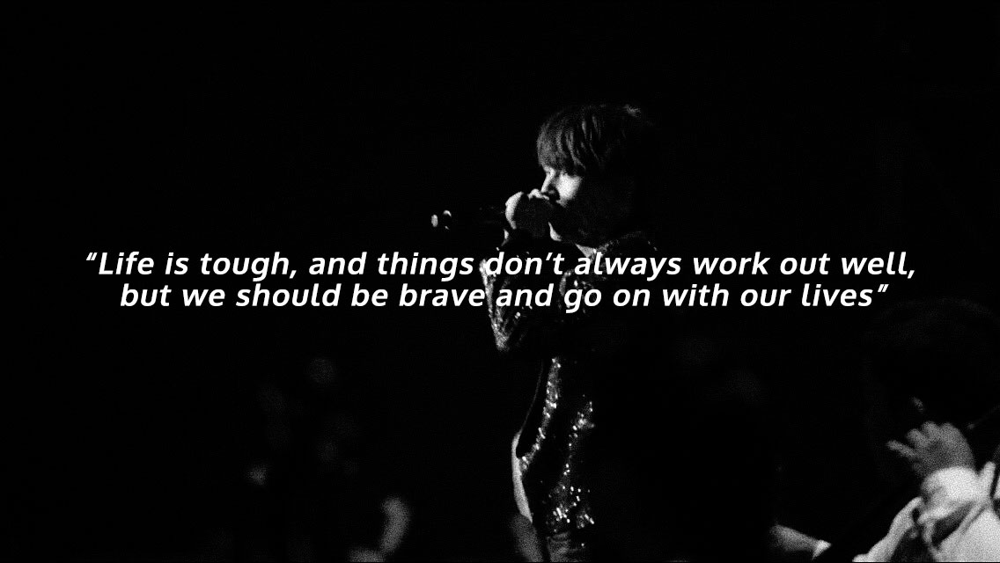

BTS Suga's wise words to add to your life philosophy
Some words to comfort and guide you in life
BTS' Suga is known as one of the quieter members of the K-pop group, but what fans know is that he's an especially wise person with a lot of great and comforting advice. He may not be the loudest voice in the room, but when he does say something, it really stands out.
Here's just some Suga quotes that make us appreciate him more every day!
Encouraging fans to follow their dreams
Thank you for listening to my music. Do not let go of your dreams. You shine brighter than anyone else. Suga, Weverse.
But that it's also ok to not know what you want
Having a simple goal as a person
I want to become a good person. But how can you become a good person to everyone? That's my greed. At least I want to be an honest person that doesn't lie. So, I've been trying to live my life like the lyrics that I wrote. Even after 10, 20 years, I can hold my head high to my lyrics. Suga, Twitter
Some advice for those studying
When you're overthinking the past
There is no need to dwell on the mistakes made in the past. It's okay to just do you. Suga, Fan Club Magazine for Japanese ARMYs
Putting life in perspective
I really want to say that everyone in the world is lonely and everyone is sad, and if we know that everyone is suffering and lonely, I hope we can create an environment where we can ask for help, and say things are hard when they're hard, and say that we miss someone when we miss them. Suga, Billboard Magazine
An inspiring thought when life feels too difficult

Share: